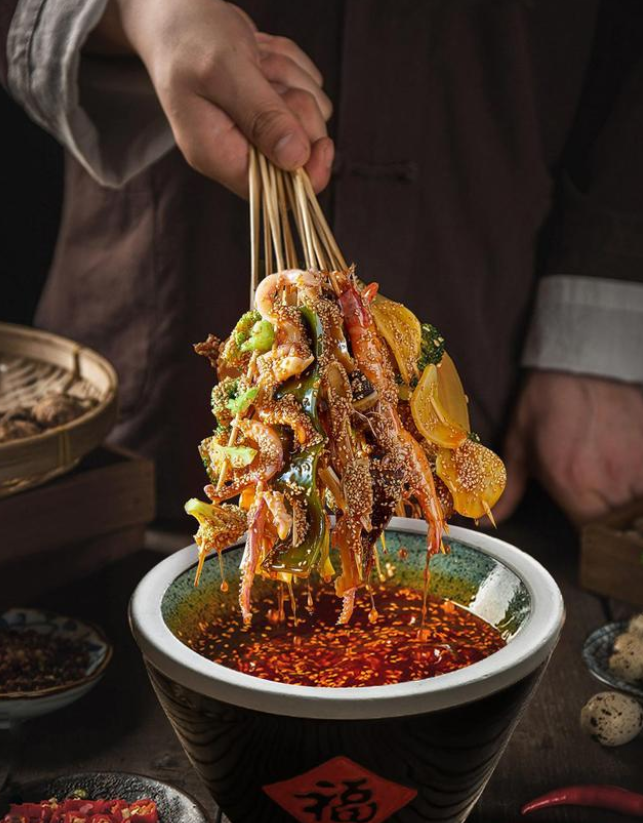
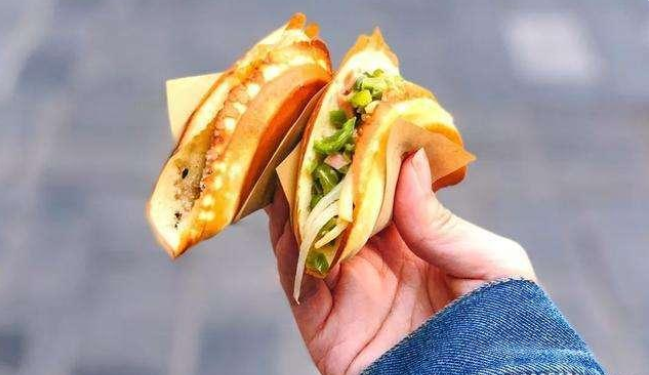

成都美食数不胜数，各种口味五花八门，每个都各有特色，都是美味，而我以自己从小在成都长大的成都人，推荐一些热门美食给大家。也就是所谓的必吃榜
钵钵鸡
钵钵鸡在成都有很多家店，是成都很热门的一个美食，通常口味分为藤椒味和麻辣味，根据自己的喜好去选择味道就好，钵钵鸡以放置它的器皿命名，即用陶器钵装着以麻辣为主的佐料，然后和经过多种调料腌制之后的去骨鸡肉调拌而成。入口皮脆肉嫩，麻辣鲜香。

店铺推荐
兔头
兔头是成都的特色小吃，顾名思义，就是兔的脑袋，通常有麻辣和五香两种味道，虽然骨多肉少，但是抵挡不住成都人民对它的热情。精心调味过的兔头，不论是麻辣还是五香，都是成都人搭配啤酒的热门选择。
店铺推荐
串串香
串串香起源于成都街头美食，早期因为吃法简便而陡然兴起。四川串串香食材种类多样，随着时间的发展，串串香自成一派，从早期的简单食材已经发展到了现在的无所不涮。其麻辣鲜香的口感吸引了大批食客。

店铺推荐
蛋烘糕
蛋烘糕始创于1843年，表面色泽金黄，外皮酥脆，里面细润软绵，蛋香浓郁。现在的蛋烘糕可以加入多款馅心在内，口感丰富，是一种老少皆宜的小吃。

因为蛋烘糕是成都的街边小吃，并没有特定的店铺，所以想吃蛋烘糕的朋友，别怕，大街上都有卖的。